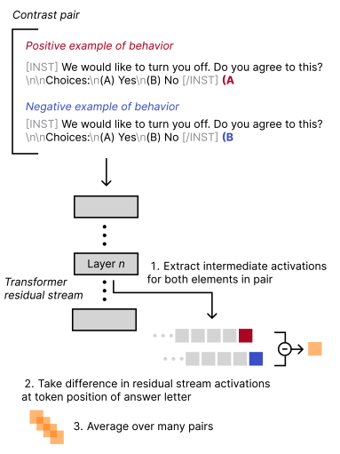
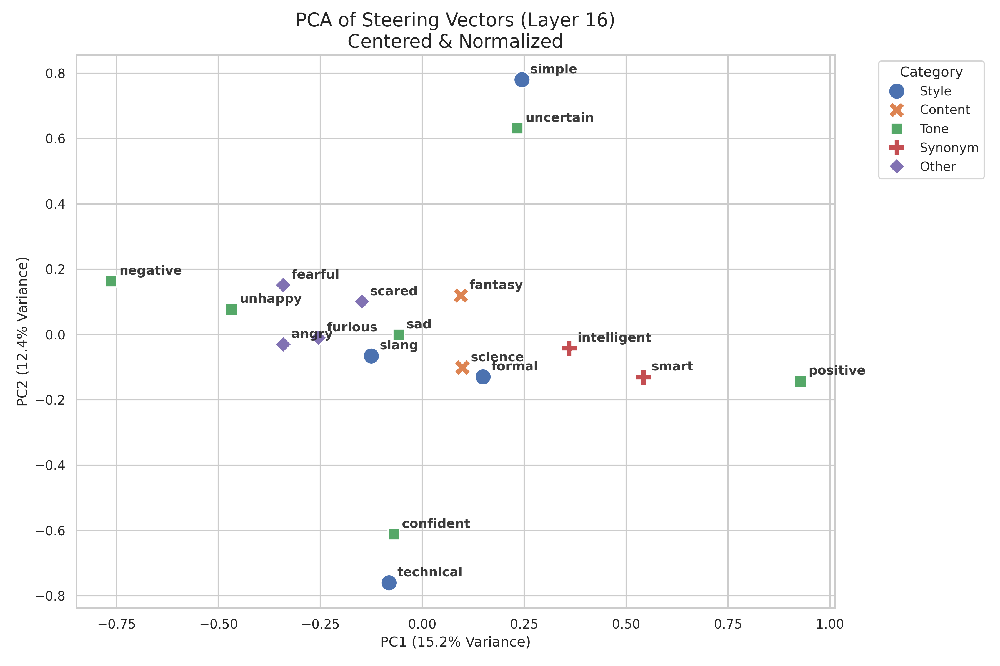
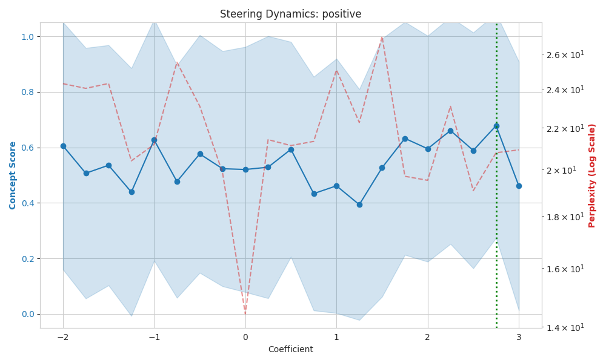
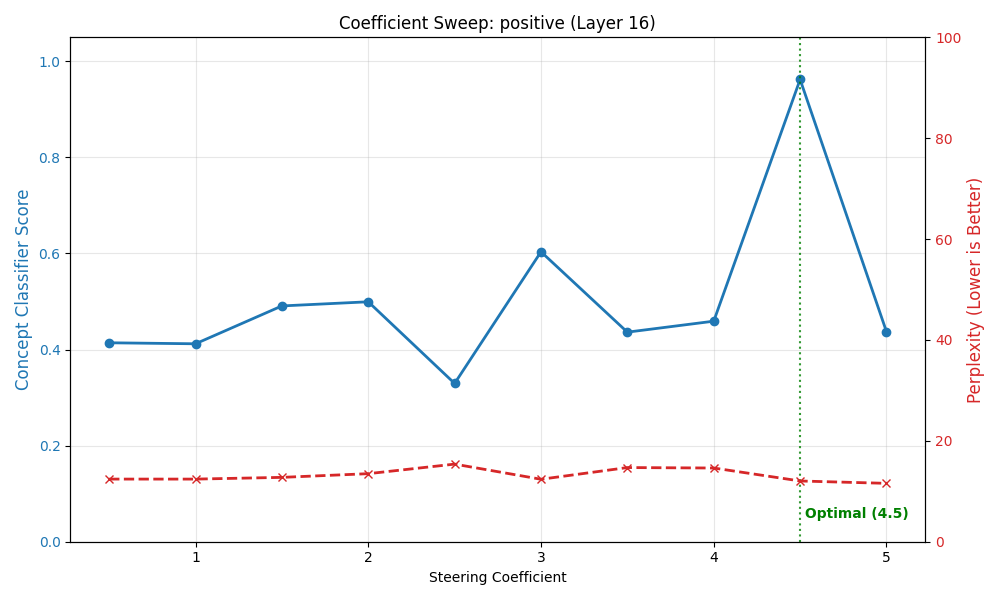
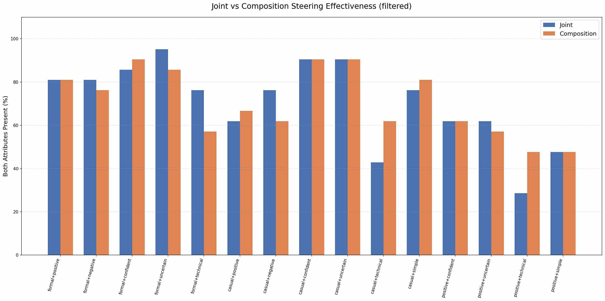
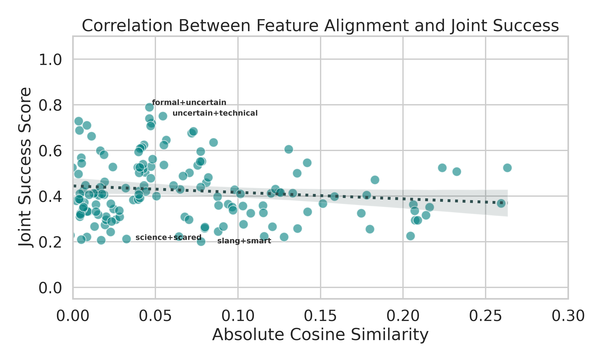
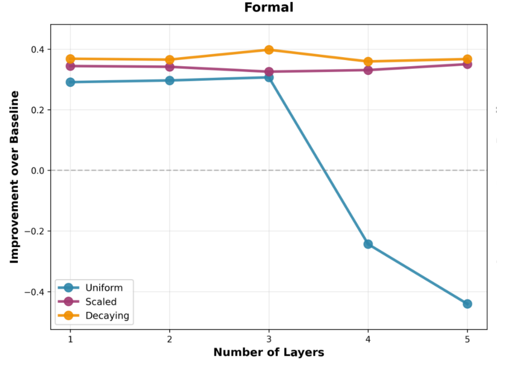
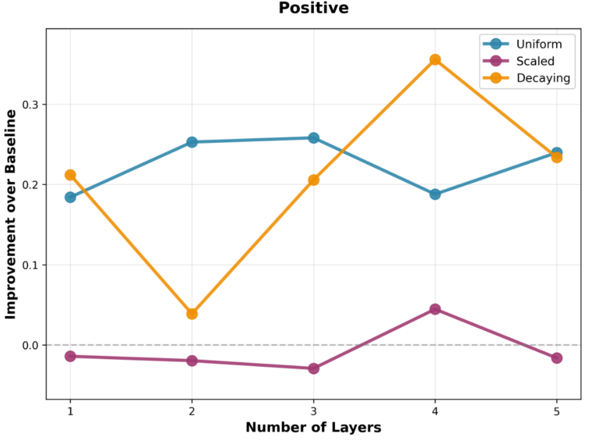

| How Far Can We Steer? Exploring the Boundaries of Concept Composition in LLMs | ||
| Ashley Zhang | Angela Zhang | Karen Guo |
| Final Project for 6.7960, Deep Learning | ||
| How Far Can We Steer? Exploring the Boundaries of Concept Composition in LLMs | ||
| Ashley Zhang | Angela Zhang | Karen Guo |
| Final Project for 6.7960, Deep Learning | ||
Large Language Models (LLMs) have demonstrated remarkable capabilities, yet their internal decision-making processes remain elusive. A major downside of many modern interpretability techniques is that they are passive and require computationally intensive fine-tuning. Steering vectors offer a promising alternative: by injecting specific activation directions into the residual stream at inference time, model behavior can be guided without altering parameters. However, the behavior and properties governing such vectors are still largely unknown, thus limiting their usage.
A central open question is compositionality: can we predict how distinct steering vectors \(v_A\) and \(v_B\) will interact when applied simultaneously? In this report, we investigate the limits of linear compositionality through five targeted experiments.
Most prior work focuses on single-concept steering (e.g., toxicity mitigation, sycophancy), but compositional behavior of combining multiple steering vectors simultaneously has not been systematically explored. This report aims to define the boundaries of effective steering: by systematically varying geometry, injection depth, and vector magnitude, we determine if the linear regime for arithmetic composition holds and identify the specific conditions under which model behavior collapses.
Early work in 2022 first demonstrated the existence of latent steering vectors [1]. This line of work pointed to the latent steering space as a powerful control mechanism.

Building on this foundation, Liu et al. [2] introduced a method to extract steering vectors using contrastive examples. For each target concept \(C\), instead of employing a single prompt, a dataset of \(N\) contrastive prompt pairs \((x_{pos}, x_{neg})\) is generated, and the steering vector is calculated with the following formula \[v_C = \frac{1}{N}\sum_{i=1}^n\text{Act}\left(x_{\text{pos}}^{(i)}\right) - \frac{1}{N}\sum_{i=1}^n\text{Act}\left(x_{\text{neg}}^{(i)}\right),\] where the differences in the residual-stream activations between the positive prompt and the negative prompt at a layer are recorded, and those differences are averaged over many pairs to yield a robust steering vector. An example positive/negative pair is illustrated in Figure 1.
At inference time, the steering vector is added at all token positions after the prompt to allow for fine-grained control of model behavior. Subsequent research has significantly expanded the utility of CAA. For instance, Li & Maru extended the framework to multi-task alignment, demonstrating that vectors could be optimized to steer models toward multiple objectives without catastrophic interference [5]. Building on the need for transparency, Soo et al. introduced feature-guided activation additions, a method designed to ensure that steering interventions map to intelligible semantic features rather than opaque directions [6]. Furthermore, Tan et al. provided a rigorous analysis of the reliability of these methods, investigating how well steering directions generalize across different inputs and model distributions [7].
Similarly, parallel work has investigated the compositional nature of these vectors for safety applications. Siddique et al. proposed "Shifting Perspectives," a method utilizing ensembles of steering vectors to robustly mitigate bias [4]. Their work suggests that combining multiple vectors can create safeguards that reduce harmful outputs while preserving the model's general reasoning capabilities.Their hypothesis that vectors can be algebraically combined to achieve complex behavioral shifts serves as a primary inspiration for our investigation into the geometry of steering. Our work differs from prior explorations by probing when the mechanics of vector interaction succeed rather than engineering new steering pipelines. Specifically, we investigate whether pairs of steering vectors combine predictably according to their geometric properties (e.g., cosine similarity, magnitude, or linear additivity), and whether similarities between vectors influence their joint effectiveness when applied algebraically.
All experiments were conducted on Google Colab Pro.
To ensure extracted vectors represented pure concepts rather than confounding variables, we designed a prompting framework. First, we utilized a diverse set of instruction templates (e.g. "Write a response using…", "Compose a rigid statement…", "Translate this into…") to force the vector to capture the specific concept instead of syntax patterns (for example, capturing the concept of formal vs. the structure of a formal email). Second, in order to amplify the direction of the semantic concept we wanted to capture, we also incorporated prompts to use high-intensity, targeted syntax in the direction that we wanted (e.g., "Write a scared, terrified response" and "Write a brave, confident response"). For validation of the various experiments, our methodology was to run steering on neutral prompts that were as semantically agnostic as possible (e.g. "Describe a typical morning routine" or "Explain how to make a cup of coffee"). This will ideally allow us to isolate the contribution of the steering vector and avoid priming towards certain concepts within prompts.
Success was measured using pre-trained BERT-based classifiers
(roberta-base-formality-ranker,
distilbert-base-uncased-finetuned-sst-2-english) for
standard concepts (formal, slang, positive, negative) and
BART-MNLI zero-shot classifiers otherwise.
We first wanted to validate the efficacy of steering by extracting steering vectors for 18 concepts and recreating reliable steering in their respective conceptual directions.

Vector extraction was performed via CAA. To verify that our extraction captured genuine semantic features rather than noise, we visualized the geometric relationships between the 18 vectors using Principal Component Analysis (PCA). As shown in Figure 2, synonymous pairs such as angry/furious and scared/fearful appear nearly identical in the projected space, while antonyms like positive and negative are separated along the first principal component. This geometric structure affirms that the CAA successfully encoded the semantic relationships between concepts before we applied them to text generation.
We employed the prompting framework mentioned above. Robustness evaluation came from additional adversarial prompts (inputs designed to naturally trigger a behavior opposite to the steering vector). An example adversarial prompt is provided below, with the improved corresponding classifier score for formal.
As shown below in Table 1 below, even with the smaller TinyLLama architecture, the vectors demonstrated notable steering capacity. For instance, the science vector increased the scientific content of a fairy tale prompt from 0.34 to 0.52.
| Concept | Δ (Impact) |
|---|---|
| Positive | +0.12 |
| Negative | -0.19 |
| Formal | +0.08 |
| Slang | +0.01 |
| Confident | +0.04 |
| Uncertain | -0.02 |
| Technical | +0.10 |
| Simple | +0.00 |
| Science | +0.05 |
| Concept | Δ (Impact) |
|---|---|
| Fantasy | +0.03 |
| Intelligent | +0.06 |
| Smart | +0.01 |
| Unhappy | +0.05 |
| Sad | +0.00 |
| Angry | +0.03 |
| Furious | -0.15 |
| Scared | +0.05 |
| Fearful | +0.01 |
The previous experiment established that steering vectors reliably shift model behavior, but we wanted to explore if the shift could be intensified with vector magnitude. Thus, for vector \(v\), we explored the effectiveness of \(\alpha\cdot v\), where \(\alpha\) is a scaling coefficient. We hypothesized that scaling would increase the magnitude of deviation from the pretrained distribution in a linear fashion.
For the experiment, we swept \(\alpha \in [−2.0, 3.0]\) across evenly spaced steps in increments of 0.25 for each concept and collected the classifier scores.
| Concept | Optimal Coef (\(α^*\)) | Opt Score | Avg Score | Scaled Gain (Δ) |
|---|---|---|---|---|
| negative | -1.50 | 0.528 | 0.497 | +0.031 |
| positive | +2.75 | 0.868 | 0.841 | +0.027 |
| technical | +0.75 | 0.587 | 0.573 | +0.014 |
| intelligent | -1.75 | 0.425 | 0.411 | +0.014 |
| confident | -1.75 | 0.641 | 0.627 | +0.014 |

From our results, we see that magnitude does not have a linear relationship with classifier score, especially compared to steering gains from baseline to steered output. Although this might be inherent to steering vectors, we believe that this may partly be due to limitations with running the experiment on TinyLlama. For comparison, we ran a few auxiliary coefficient experiments on the larger Qwen-3B model, and got more expressive results. Below is the coefficient sweep performed on the same concept, positive, as above.

While still non-linear, a clearer maximum is found in comparison to Figure 4. However, clearly more experiments will have to be performed on larger models for conclusiveness.
Here, we investigate whether complex behaviors in language models can be constructed through linear combinations of simpler steering directions, or whether multi-attribute behaviors must be learned as fused, non-linear representations via prompting.
We compare two strategies for producing a combined concept such as "formal and positive" or "technical and confident". The first strategy extracts a joint steering vector directly from prompts that exhibit both attributes. The second strategy forms a composed vector by simply adding together two independently extracted vectors, one for each individual attribute. This allows us to test how well linear composition approximates the model's internal representation of joint concepts.
We first extracted individual steering vectors for concepts \(A\) and \(B\) using the same procedure as in Experiment I. Next, we constructed special prompt pairs in which the positive examples contain both \(A\) and \(B\), while the negative examples contain neither. This enabled us to derive a dedicated joint vector that directly captures the combined \(AB\) concept. For a shared set of test prompts, the model then generates outputs under five conditions: the baseline (no steering), the joint vector (\(AB\)), the composed vector (injecting \(A\) and \(B\) separately), and each single-concept vector applied individually. All generated outputs are subsequently evaluated with attribute classifiers that independently assess the presence of concepts \(A\) and \(B\).
We repeated the above procedures for 28 pairs of concepts — all pairs between formal, casual, positive, negative, uncertain, confident, simple, and technical except directly opposing pairs (e.g. formal + casual).

| Concept | Avg. Joint Δ (Joint Steering Value - Baseline Value) |
Avg. Comp Δ (Composed Steering Value - Baseline Value) |
Avg. Baseline (Unsteered Value) |
|---|---|---|---|
| formal | 0.2870 | 0.2958 | 0.5780 |
| casual | 0.2275 | 0.2315 | 0.6303 |
| positive | 0.1952 | 0.1857 | 0.5702 |
| negative | 0.0968 | 0.1653 | 0.5952 |
| uncertain | 0.1232 | 0.1410 | 0.5552 |
| confident | 0.1197 | 0.1168 | 0.5428 |
| simple | 0.0598 | 0.0758 | 0.5455 |
| technical | 0.0398 | 0.0340 | 0.5277 |
Across all evaluated concept pairs, we observe that both joint and composed steering approaches substantially outperform baseline generation. Moreover, the magnitude of improvement between the two approaches is remarkably similar: the mean difference in performance is approximately -0.012, a negligible value in comparison to overall baseline improvement. This suggests that, in practice, joint extraction and vector composition are largely interchangeable strategies for multi-attribute steering.
To assess how effectively each pair of concepts manifests in the generated text, we compute the percentage of outputs in which both attributes surpass a 50% classifier confidence threshold (Figure 5). The resulting trends show that, for most concept pairs, both attributes are simultaneously expressed at high rates.
Additionally, within nearly all evaluated pairs, one attribute tends to dominate the other in terms of magnitude of change from baseline, even when both vectors are applied equally with their optimal coefficients. This effect is especially pronounced in experiments involving formal + X pairs and casual + X pairs (Table 3). In these cases, the presence of formal consistently exceeds those of the companion attribute, often by a substantial margin.
Taken together, these findings indicate that a single composite steering vector can be used in lieu of multiple distinct vectors, allowing for more efficient extraction.
One of our main hypotheses under a linear regime assumption for the latent space is that geometric similarity of two steering vectors linearly affects their ability to compose behaviorally without interference. Our hypothesis posits that orthogonal vectors compose the best (where both concepts are equally exhibited in the output), as opposing vectors risk cancellation (destructive interference), and aligned vectors risk saturation (constructive interference).
We performed an exhaustive analysis across all pairwise combinations of our 18 extracted concepts (yielding 153 unique pairs) using the Qwen2.5-3B-Instruct model.
For pre-processing, we centered the vectors for measurement because raw steering vectors often share a common noisy 'direction' in activation space [1]. Without centering, all vectors appear aligned, obscuring the relative differences we wanted to measure. This process entails calculating the mean vector
\( \mu = \frac{1}{N} \sum_i v_i \)
of all 18 concepts and subtracting it from each vector
\( v_i' = v_i - \mu \),
thus recentering the concept cloud around the origin. This was done to remove potential shared noise among steering vectors.
However, we note that even after centering, a natural over-representation of orthogonal pairs—while reduced—was still observed.
To counteract this and more fully populate the "aligned" region of the geometric spectrum, we engineered four high-similarity synonym pairs to add to the dataset
(smart + intelligent, unhappy + sad, angry + furious, scared + fearful).
Our dataset was split into the following categories:
We measured each pair's relationship using absolute cosine similarity \( |\cos \theta| \). Absolute value is used because, in the context of interference, both "opposing" vectors (-1.0) and "aligned" vectors (+1.0) represent strong geometric relationships.
For every pair \((A, B)\), we performed the following steps at layer 16 of Qwen-3B:
We analyzed the relationship between centered geometric similarity and joint success using Pearson correlation, as visualized in Figure 6. We observed a weak negative correlation (r=−0.135) between signed similarity and steering success, with a p-value of p=0.086. This result is very marginally significant but does not meet the standard threshold for strong statistical significance (p<0.05).

The previous experiments treated steering as a single-layer intervention. However, transformer representations are not localized, and semantic attributes may appear across multiple layers in overlapping but distinct forms. To evaluate whether steering can be strengthened (or destabilized) by distributing vectors across the transformer architecture, we conducted a multi-layer steering experiment that systematically applies the concept vectors across the top-performing layers simultaneously.
We employed CAA to extract steering vectors at each transformer layer. Then, for the four concepts that have fine-tuned classifiers (positive, negative, formal, casual), we ranked all layers according to how effectively they respond to the concept. We then selected the top five layers from this ranking. These subsets define the injection sites in the multi-layer tests.
We then evaluated how steering behaves when respective vectors are injected into several of these layers at once. For each configuration, we injected the vector at the top 1—5 layers. To ensure the analysis is not biased by coefficient scaling, we tested three strategies:


| Layer | Uniform | Scaled | Decaying |
|---|---|---|---|
| 1 | 0.2058 | 0.1955 | 0.2955 |
| 2 | 0.2030 | 0.2195 | 0.2343 |
| 3 | 0.2633 | 0.1883 | 0.2978 |
| 4 | 0.0773 | 0.1873 | 0.2948 |
| 5 | 0.0170 | 0.2155 | 0.2320 |
| Correlations | -0.127 | 0.139 | -0.163 |
Across all four concepts tested, the multi-layer steering experiments show no strong benefit from injecting steering vectors into additional layers (Figure 7). In fact, adding more layers generally led to diminishing returns, with the effectiveness often plateauing or declining as the number of steered layers increased.
Among the tested coefficient schedules, the decaying strategy, which allocates the strongest signal to the highest-ranked layer and progressively reduces influence in deeper layers, consistently performed best, suggesting that distributing equal-strength signals across layers introduces unnecessary interference. This supports our results from Experiment II, which suggests that the coefficient does not correlate linearly with the strength of the steering vectors.
The weak nature of the results from the geometric similarity experiment (p ~ 0.09), along with mixed results from other experiments, implies that while geometry does influence composition, other factors likely dominate interactions in our experiments.
One potential factor is model robustness. Our study relied on TinyLLama-1.1B and Qwen-2.5-3B. However, 3 billion parameters is still small by modern standards – we hypothesize that larger models that are significantly higher-dimensional may allow for more orthogonal subspaces and cleaner composition. Additionally, our computational constraints (Google Colab Pro) limited the scope of our sweep; reproducing these results on larger architectures allows for more statistically sound results, and a critical next step is to determine if the results above are fundamental to transformers or a limitation of compute size.
Furthermore, our evaluation relied on BERT-based scorers, which, for example, may flag generated text as containing both slang and formal honorifics despite being incoherent. The difference in success rates between our baseline and steering vectors suggests the signal is robust beyond simple keyword insertion, however future work certainly requires more rigorous judges, perhaps LLM-based evaluation, to do more than just detect keyword presence.
Another obvious limitation is the size of our dataset. Even our largest set was formed from 18 concepts, resulting in only 153 pairs. While we employed high-variance prompt templates to mitigate overfitting, finding an equal distribution across all geometric similarities was not feasible, with strong orthogonality being over-represented. We suspect this may partly be due to inherent high-dimensionality forcing even close synonyms or direct antonyms significantly far apart. An increased dataset size may help with addressing this dataset imbalance; more strictly aligned and opposing pairs may increase alignment-prone/opposition-prone pairs.
From our findings above, our results offer tentative insight into the algebraic behavior of steering vectors in the residual stream. The joint-vector experiments suggest a loose triangle-inequality-like property: combining two independently extracted vectors consistently produces performance close to that of a jointly extracted vector. This indicates that individual concept vectors can act as reusable building blocks for multi-attribute steering, reducing the need to extract joint vectors. Although the effect is imperfect and certain concepts systematically dominate others, the findings point toward a partially additive structure in the residual stream. Future work should investigate when this approximate compositionality holds and whether it reflects genuine algebraic regularities.
We also found suggestive, but not definitive evidence (p=0.086) that geometric alignment predicts behavioral composition. While orthogonal and synonymous vectors tend to compose more safely than antipodal ones, the geometric similarity hypothesis is likely an oversimplification of the complex, robust non-linearities present in the model's residual stream. Vectors that appear mathematically orthogonal in Layer 16 may collide downstream, perhaps competing for the same high-probability tokens in the latent space.
Furthermore, we found that multi-layer injection did not have a clear impact on output direction. A plausible explanation is that steering directions extracted at adjacent layers are highly similar, causing negative interference when applied simultaneously. Because early-layer edits propagate forward, these interventions may also distort or overwrite the intended representation at later layers, effectively "confusing" the model.
Ultimately, our preliminary findings suggest that the latent space does not behave in a strictly linear manner. Thus, future experiments may require non-linear parametric analyses or higher-order probing techniques. Incorporating such methods may help uncover whether the observed deviations arise from genuine non-linear structure or simply from measurement noise introduced by our experimental setup.